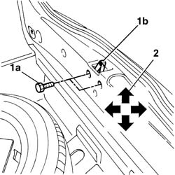
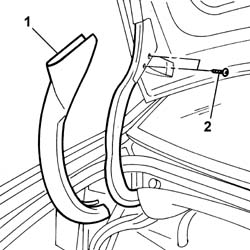
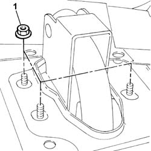

7025B10 Boot lid - Realignment
- Path
- Procedures > 70 FITTINGS > 7025 COMPARTMENT LIDS > 7025B BOOT LID > 7025B10 Boot lid - Realignment
- Kind
- repair procedure (removal / refitting; the operation number is the code)
- Applies to
- all engines; all production periods
- Interactive page
- https://sloeber94.github.io/elrnDB-lThss/en/#/80229
Applies to: all engines; all production periods
1. Loosen the bolts (1a) fixing the boot lid striker (1b).
- To adjust the boot lid in relation to the seal, move the striker into the correct position making use of the slotted openings in the actual striker.
2. The arrows indicate the possible movements for the adjustment.

Applies to: all engines; all production periods
- Carry out the operations described below to adjust the boot lid in a vertical direction.
See in Op. 7025B18 Boot LID LINING - R.R.
1. Release the hinge protection.
2. Loosen the bolts fixing the boot side hinge brackets.

Applies to: all engines; all production periods
- Continue with the adjustment, making use of the slotted openings in the boot lid hinges.
- At the end of the operation, tighten the bolts fixing the boot lid hinges and the striker.
See in Op. 7025B18 Boot LID LINING - R.R.
- Carry out the operations described below to adjust the boot lid in a lengthwise direction.
- Disconnect the negative battery terminal.
See in Op. 7040B10 LOAD CARRYING COMPARTMENT LINING - R.R.
See in Op. 7040B12 Luggage compartment/load platform left SIDE LINING - R.R.
-
See in Op. 7040B17 Luggage compartment/load platform side trim flap (one) - Replace
-
See in Op. 7040B13 Luggage compartment/load platform SIDE LINING - R.R.
-
See in Op. 7050A20 Single rear seat cushion - R.R.
-
See in Op. 7050A19 REAR SEAT BACKREST - R.R.
-
See in Op. 7040H46 Left or right rear pillar upper trim (one) - R.R.
-
See in Op. 7040B21 Luggage compartment upper TRIM - R.R.
-
See in Op. 7040H80 REAR PARCEL SHELF - R.R.
-
1. Loosen the nuts fixing the rear parcel shelf crossmember side hinges.

Applies to: all engines; all production periods
- Continue with the adjustment, making use of the slotted openings in the boot lid hinges.
- At the end of the operation, tighten the bolts fixing the boot lid hinges and the striker.
See in Op. 7040H80 REAR PARCEL SHELF - R.R.
See in Op. 7040B21 Luggage compartment upper TRIM - R.R.
-
See in Op. 7040H46 Left or right rear pillar upper trim (one) - R.R.
-
See in Op. 7050A19 REAR SEAT BACKREST - R.R.
-
See in Op. 7050A20 Single rear seat cushion - R.R.
-
See in Op. 7040B13 Luggage compartment/load platform SIDE LINING - R.R.
-
See in Op. 7040B17 Luggage compartment/load platform side trim flap (one) - Replace
-
See in Op. 7040B12 Luggage compartment/load platform left SIDE LINING - R.R.
-
See in Op. 7040B10 LOAD CARRYING COMPARTMENT LINING - R.R.
-
- Connect the negative battery terminal.
Topics linked from this page (10)
- 7025B18 Boot LID LINING - R.R.
- 7040B10 LOAD CARRYING COMPARTMENT LINING - R.R.
- 7040B12 Luggage compartment/load platform left SIDE LINING - R.R.
- 7040B13 Luggage compartment/load platform SIDE LINING - R.R.
- 7040B17 Luggage compartment/load platform side trim flap (one) - Replace
- 7040B21 Luggage compartment upper TRIM - R.R.
- 7040H46 Left or right rear pillar upper trim (one) - R.R.
- 7040H80 REAR PARCEL SHELF - R.R.
- 7050A19 REAR SEAT BACKREST - R.R.
- 7050A20 Single rear seat cushion - R.R.